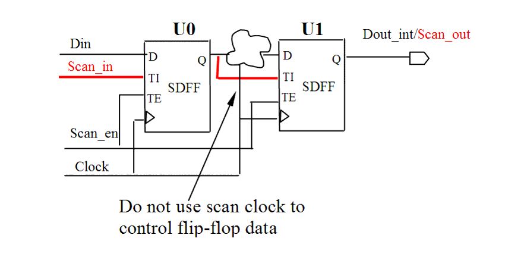

| Description | Such structures must be eliminated because they decrease test coverage. |
| Policy | DESIGN |
| Ruleset | DFT |
| Language | VHDL/Verilog |
| Type | Hardware |
| Severity | Error |
This is an example of invalid Verilog code, followed by a circuit diagram that illustrates the problem:
module ntl_dft26_top(Clock, Scan_en, Scan_in, Din, Dout); input Clock, Scan_en, Scan_in, Din; output Dout; reg Dout_temp; wire Clock_ctrl; //Clock_ctrl logic is controlled by Clock assign Clock_ctrl = Clock & Dout_temp; // Scan DFF -- SDFF SDFF U0(.D(Din), .CP(Clock), .TI(Scan_in), .TE(Scan_en), .Q(Dout_temp)); ... SDFF U1(.D(Clock_ctrl), .CP(Clock), .TI(Dout_temp), .TE(Scan_en), .Q(Dout)); // NTL_DFT26 fires -- Scan clock controls flip-flop data endmodule